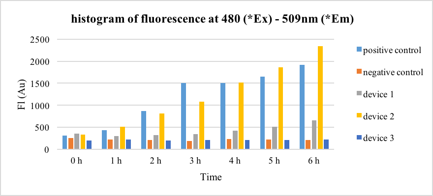
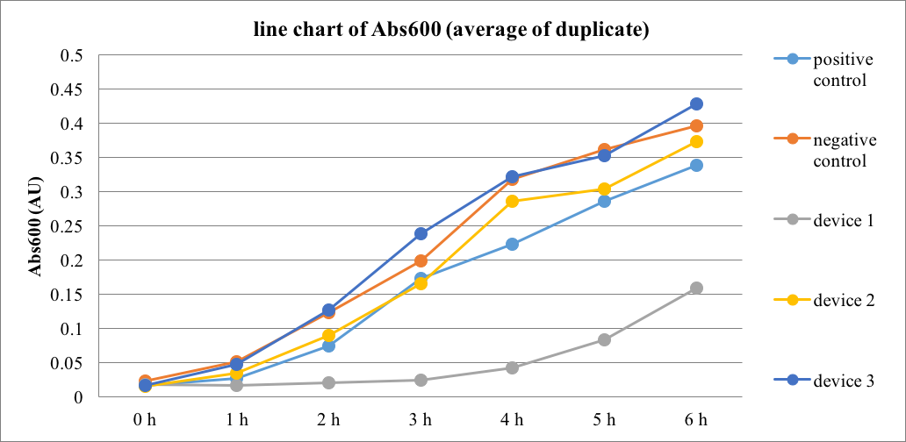
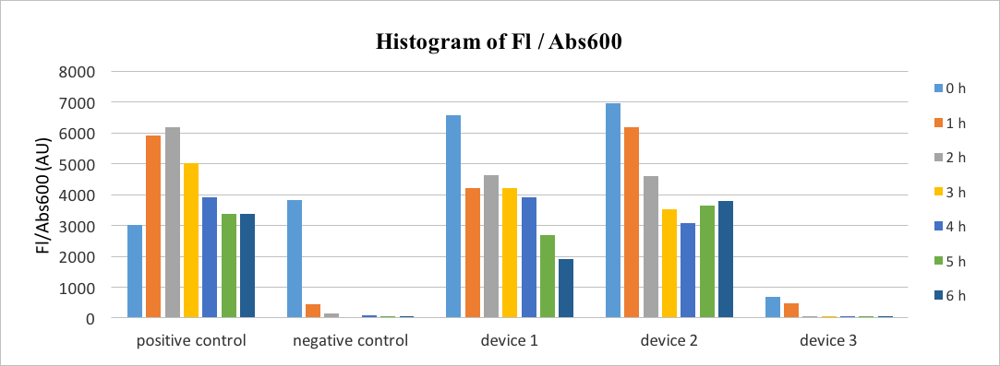
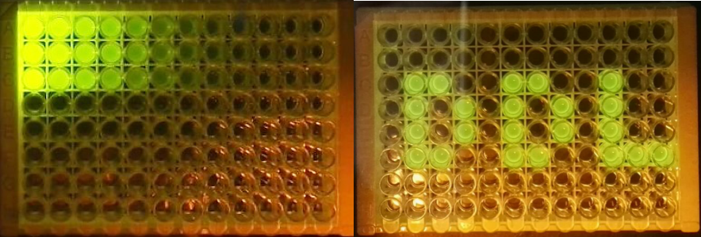

Interlab
This year, three devices consisting of a constitutive promoter with low (J23117), medium (J23106) and high (J23101) promoter strengths expressing GFP (E0040) as reporter needed to be measured. Two more devices with negative (I20270) and positive (R0040) control part were used as references. These devices along with FITC and LUDOX for calibration and measurement were sent by the iGEM officials.
Fluorescence was measured from overnight cultures using Plate Reader BioTek® Synergy H1 to compare three promoter strength respectively . All raw data is provided below which can be download as EXCEL.
In order to compare the three different promoters mentioned above, a histogram showing the fluorescence intensity at 509nm (figure 1) was formed.

Figure 1. Histogram of fluorescence intensity at 509 nm of different devices, comparing the reporter GFP intensity after J23101 (device 1), J23106 (device 2) and J23117 (device 3) promoters. Ex: excitation, Em: emission
In correspondence to the requirements of the measurement protocol,the figure 1 above was shown with all the data subtracted from the blank. (Raw data is available in the Notebook site)
It could be seen from the result that the control group (both positive and negative) showed a normal expression of GFP. Device 1 had the most powerful promoter (J23101) but the re sult showed that it only had a rather low expression of GFP. Device 3 (J23117) had an expression of GFP that was 1.1 times more than the negative control had, which was 17 times lower than the positive control. The expression of Device 2 (J23106) was 1.2 times higher than the positive control.
As the results was not as expected, we analyzed the growth of the cells (figure 2).

Figure 2. Line chart of cells’ intensity at 600 nm of different devices, comparing the cell concentration.
The figure 2 showed that cells with device 1 grew slower than other groups. Therefore different growth pattern would affect the overall detected expression of GFP, resulting in the unexpected phenomenon. So it is better to compare the level of expression in a different way. As suggested by iGEM, we used the data Fl (fluorescence) / Abs600 to create an average fluorescence of cells in the medium (figure 3).

Figure 3. Histogram of FL/Abs600 in different devices, comparing the average fluorescence of each device.
The figure 3 showed that the level of expression in device 1 was nearly as strong as device 2 by comparing the Fl/Abs. The result also revealed that the average fluorescence was decreasing when the increase of cells number. Overall, the results suggested that device 1 was not working as well as expected.
From all the figures we found that the standard deviation was quite large, some data recorded were even below zero. As the incubator is shared by all colleagues in the lab, and was occasionally stopped and opened by others, the incubating temperature was inconstant. This might affect our E.coli’s growth and expression in some degree, explaining the large standard deviation.

Figure 4. Post-laboratory Things. Two beautiful fluorescence picture was showed under the blue light. The left one showed the fluorescence of FITC standard gradient. The right one showed the panic of our team members worrying about the deadline to submit data.
We not only gained experience but also pleasure.